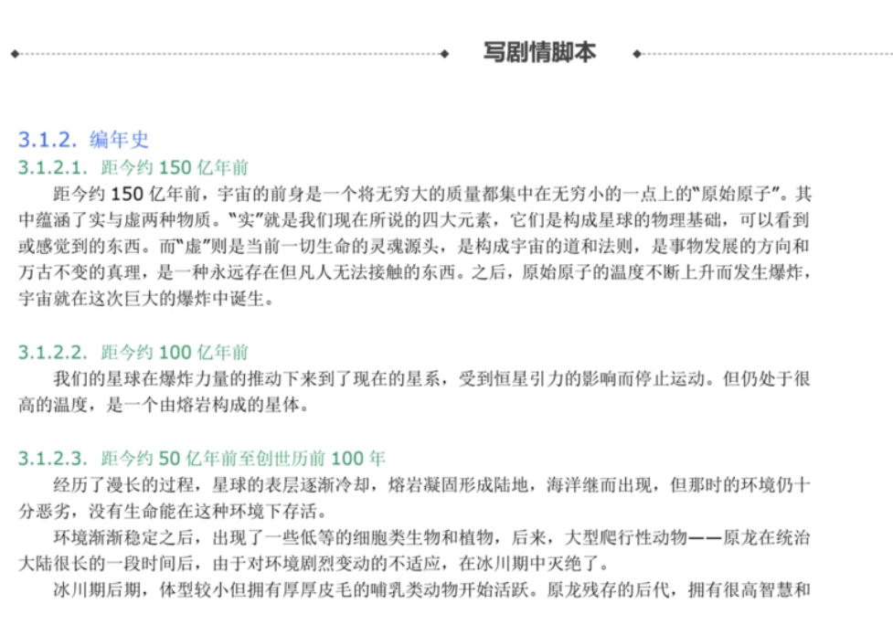
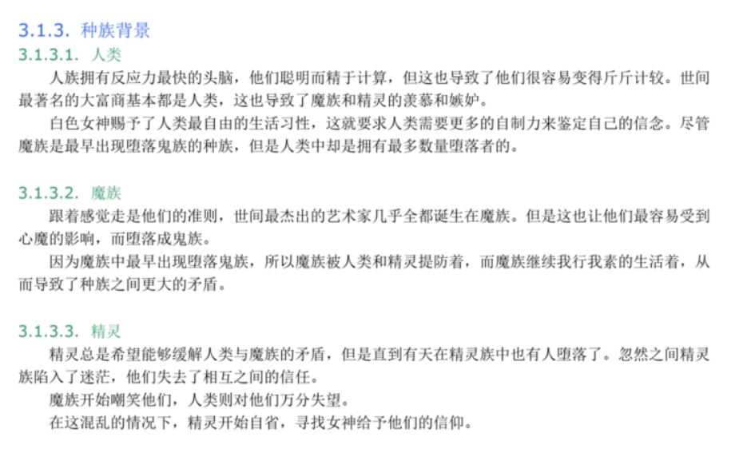
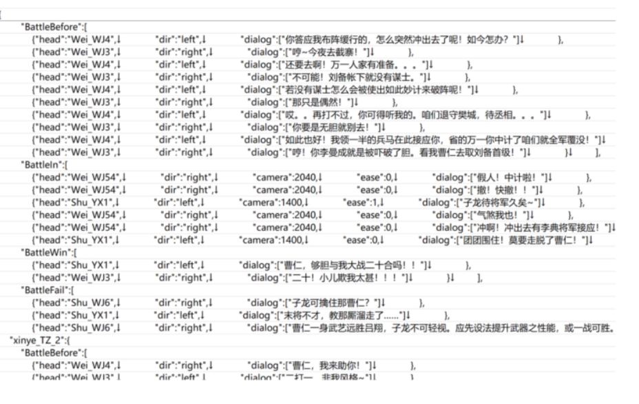
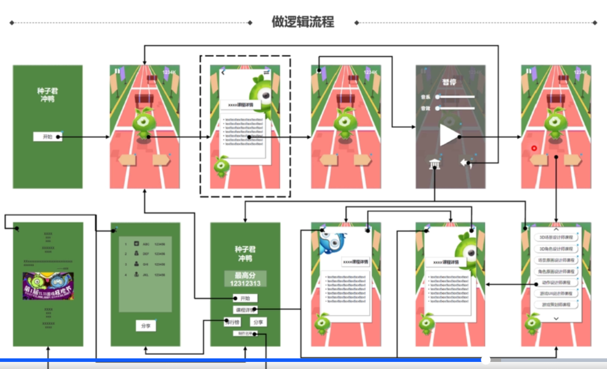
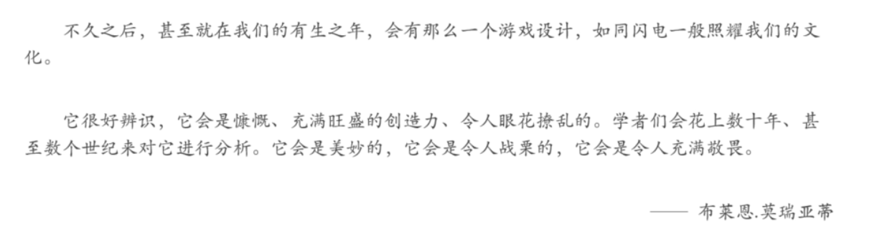

# 分工
制作人
- 招聘人员
- 建立团队
- 协助游戏设计（看制作人的履历）
- 管理团队日程
- 解决团队争议
- 做决定的魄力
- 承担后果的勇气和能力
- 让开发不要停
策划
- 创意设计（5%）
- 更重要的是能否让项目落地
- 制作文档
- 沟通交流
- 分析用户
程序
- 引擎构建
- 高成本，至少要有引擎组
- 育碧、卡普空等，一般有自己的引擎
- 小工作室，时间成本不支持自由引擎，可以选择商用引擎（unity，虚幻），但更新代换取决于商家
- 游戏逻辑
- 界面逻辑
- 数据库逻辑
- 编辑器开发维护
- 与引擎的交互工具
- 能否把引擎的效果发挥出来
美术
- 概念创作、原画创作
- 模型制作
- 场景角色模型等
- 与贴图密不可分
- 贴图制作
- 动画制作
- 特效制作
- UI 制作
声音 / 音乐： 对游戏体验的提升
- 音乐制作
- 音效制作
- 配音制作
测试（QA，质量保证）
- 质量保证
- 可玩性检验
- 开发者疲了，需要其他人来发现问题
- 测试一般在中后期加入
- 在国内环境不好，但在国外很看重
市场运营客服
- 游戏发行
- 前期宣传
- 活动运营
- 客诉需求
现在已经进入了服务化游戏的环境，所以市场方面的工种也十分重要
# 游戏制作流程
以 MMORPG 为例：
1 立项阶段
- 始于市场分析
- 基于游戏体验报告对市场进行分析
- 综合自己擅长的游戏项目进行开发
- 要么就是跟风立项
- 始于设计者
- 设计者提 idea，做 ppt 展示，领导拍板
- 平时的创意记小本本
- 只要有想法都可以提，只要公司看到并选用
- 始于资本
- 有钱找人 / 投资
- 热钱越来越少，所以这种现象越来越少见
2 原型阶段
- 在没有美术的情况下，如果别人也觉得好玩，那么这个游戏就算成功的
- 大公司该阶段一般都拿之前的美术继续用
3 Alpha 阶段（大规模开发阶段）
3.1 世界观设定
- 真实可信的宏观游戏设定
- 比如世界的最高法则？
- 如何看待人类等
- 帮助开发者有整体认识
3.2 故事与概念设定
- 故事：更具体，重要人物地点事件
- 概念设定：在故事基础上进行，不强调细节，整体统一认知
3.3 任务流程与场景设计
- 基于主线，如何引导
- 基于流程，场景设计需求等
3.4 角色设计
- 详细的设定，细节上
- 三视图、衣服设计、武器材质 etc
3.5 模型、动画特效
3.6 关卡设计与制作
3.7 系统设计与制作
- 装备、宠物、游戏升级等
3.8 音乐、音效、配音制作
4 Beta 阶段
4.1 测试（QA）
- 从一月一个版本的频率逐渐变成一天一个，，
4.2 调优 - 封测内测、删档测试、不删档测试
- 测试的同时
- 根据数据进行进一步修改
5 上线运营
# 游戏策划的日常工作
- 画思维导图 —— 帮助思考，记录框架和内容间关系
- 思维导图大框架
例：MMO 任务系统- 阵营任务
- 资源任务
- 活动任务
- 新手引导
- 主线任务
- 支线任务
- 根据框架完善分支
！保证文档大纲不出问题
- 做概念图
- 帮助别人清晰的知道你想做的是什么
- 单页说明书
- 给一起工作的小伙伴进行说明游戏核心玩法
- 核心玩法、角色
- 用户画像
- 面对什么样的用户、有什么特点
- 点子适合什么用户
- 做桌面演示
- 任何游戏都可做桌面演示
- 好处：
- 可以在没有技术美术参与的情况下验证游戏玩法
- 发现问题及时修改
- 做十页说明书
- 向投资者 or 上级
- 要把游戏进展，未来发展等都写的比较清楚
- 用于说服投资 and 立项
- 写策划文档
- 格式、内容
- 剧情脚本（多图）
- 例如：世界观、设定、脚本
- 剧情脚本很 AVG



- 数据表
- 交互原型
- 逻辑流程
- 点按钮，转哪张图
- 如何转到下一页面
- 帮助程序了解逻辑
- 帮助美术了解需要什么页面

- 行为预测
巴特尔玩家分类法：只是最适合 MMORPG（但是经常被用烂）
除此之外，其他分类如人口统计学上的玩家分类
- 预测偏好程度
- 预测情感出发
- 预测影响程度
- 预测使用情景
- 进度管理
- 主策 -》小策划 -》小组的程序美术
- 整理需求单
- 有什么、什么时候做完
- 什么做了什么没做
- 大表，整理进度
- 沟通协调
- 演讲、沟通
- 测试
- 配合 QA 修改 bug
- 跑版本、修改影响玩家体验的地方
# 细分与能力需求
系统策划
- 解决玩什么、为什么、怎么玩
- 识别用户
- 整理需求
- 寻找方案
- 能力：
- 分析 沟通 is important
- 感知
- 创意 交互
数值策划
- 让奖励令人期待
- 创造属性
- 设计公式
- 调节常量
- 能力：
- 数学水平
- 耐性、仔细、专注
- Excel、VBA
文案策划
- 建立代入的起始点
- 玩家进入游戏后看到的是什么
- 玩家以身份行动、遇见什么事情
- 虚拟世界包含什么以满足玩家需求
- 能力
- 人物塑造、文笔 - 编故事
- 场景描写、物件描写
关卡策划
- 构筑游戏世界
- 帮助美术整理素材：不管是场景还是角色
- 制作场景：使用编辑器生成地形、放置地表元素、放置触发器、调用任务或对话。以及种植怪物出生点、设置怪物巡逻路线、路点等 etc
- 调节平衡：（单机更）针对系统策划的需求，让场景中的对抗元素趋于平衡
- 能力
- 地图编辑器
- 耐心、细心、专注
- 协调沟通
- 平衡处理
- 美观处理
执行策划
- 一开始，从执行策划做起
- 熟悉流程
# 成为游戏策划
- 想要改善某个游戏
- 把想法细化为方案
- 设计
如何行动？
需要海量的知识，要保持好奇心
- 多练习：写策划案，就像将来能做出来一样认真写
- 收集素材：美术素材 / 案例分析 / 多翻商店 / 自己截图
- 收集灵感：游戏 / 电影 / 小说 / 生活
尝试入行
- 简历
- 介绍册 / 作品集：策划竟然也要作品集！
- 卫生么想做游戏
- 最喜欢的游戏
- 熟悉厂商的游戏
- 最喜欢的制作人，为什么
推荐：《关于游戏的信仰：Jonathan Blow 的创作哲学》
